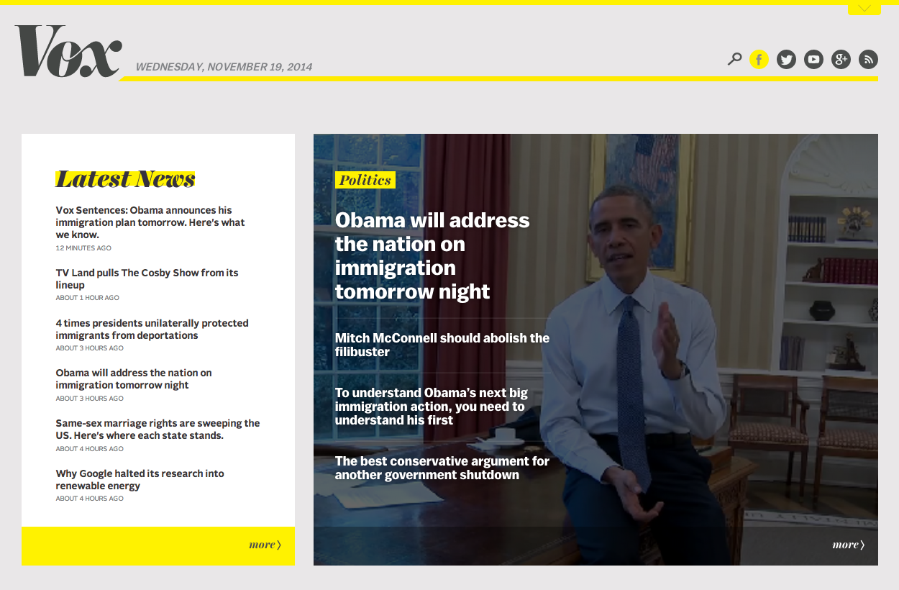
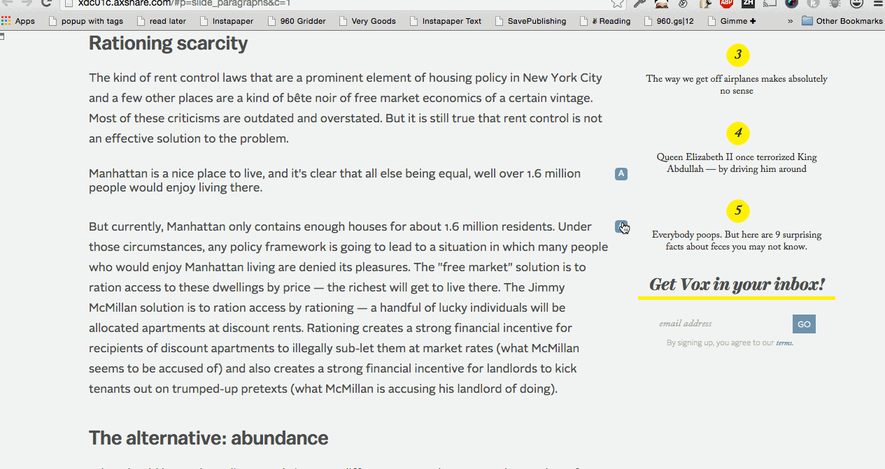
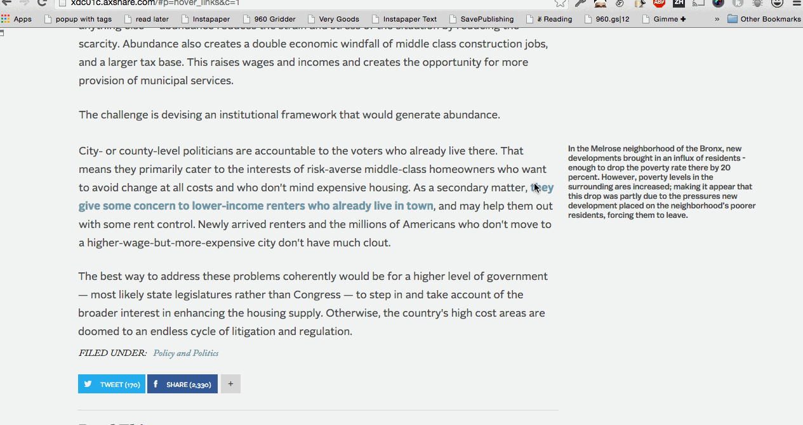
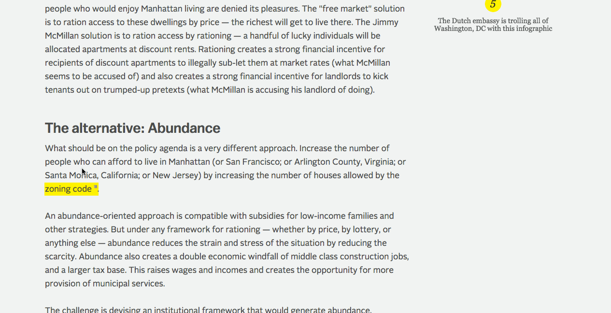

This post is still very much in progress. Thanks for bearing with me.
I've really admired Vox's willingness to experiment with editorial design and different types of content. When I initially approached them about this project they had three areas of interest, all surrounding content that didn't quite fit in a the body of an article for different reasons, but could still be valuable to readers. After talking with Warren and Ryan and going through all of Vox's different features, we refined our design question to "How can we create a reading experience for supplementary content that makes itself available when the reader wishes, but allows the reader to focus on the primary content at all other times?"
From there, I researched annotation design patterns and started doing some quick sketches of my own.
The group went over them and after a bit of sketching and discussion chose three that we felt represented common archetypes to prototype for our study with readers.
We used what we referred to as our baseline, which seemed like the default for a lot of sites, where annotations rested in the right margin and were always visible.

We also had two designs where the annotation is hidden by default and has to be revealed by the reader.


We've conducted 18 sessions with readers where we observed them reading the article and interacting with the annotations before interviewing them about their experience with our design and their reading habits. We took that data and created an affinity diagram in order to identify trends and lessons for the next iteration of our design. We're still sketching and refining our ideas, but here's and example from this round.

I'll have more from my sketchbook and the research portion of this project here soon
Vox
I'm working with Vox to find new ways to present additional relevant information alongside articles, allowing readers to explore a subject more deeply, without distracting from the core reading experience.
This project is still in the early stages, but I'll be doing some research on reading behavior and what type of information is valuable to readers, designing prototypes, and evaluating those prototypes. This will serve as my masters capstone project. I will immerse myself in annotations, sidenotes, related article features, paragraph level commenting, and so much more to emerge a Master of Science!
Check out what I got up to at DIY this summer